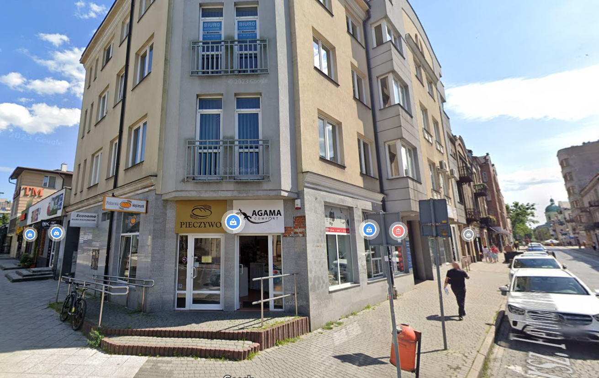
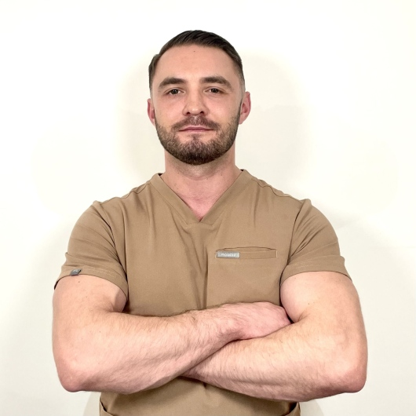
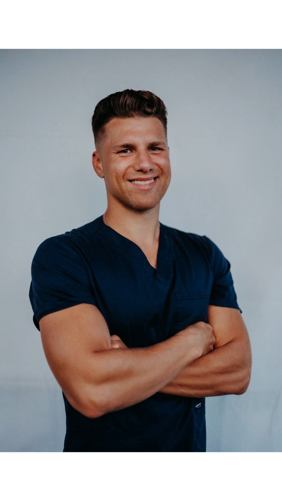
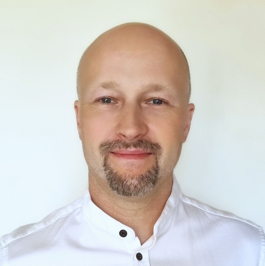
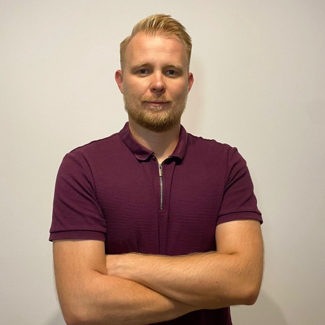
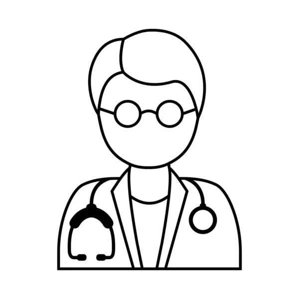
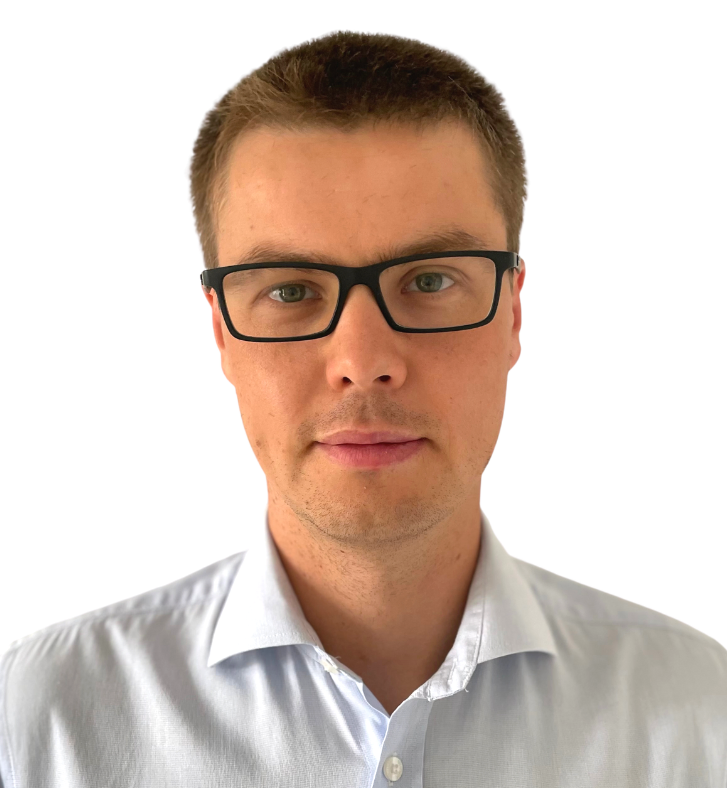

Usługi

Zabiegi z użyciem osocza bogatopłytkowego (PRP)

Iniekcje z kwasu hialuronowego

Blokady przykręgosłupowe

Konsultacja ortopedyczna

Jesteśmy ortopedami nowego pokolenia. Łączymy najnowocześniejszą wiedzę medyczną z pasją do tego, co robimy. Dzięki naszemu doświadczeniu zdobytemu podczas ciężkiej pracy w najnowocześniejszych ośrodkach medycznych w Polsce i zaawansowanej aparaturze, którą posiadamy w naszej klinice, zapewniamy skuteczne leczenie nawet najbardziej złożonych przypadków. Jeśli szukasz ortopedy w Radomiu, który szybko postawi Cię na nogi, to właśnie nas znalazłeś.
Zarezerwuj wizytę
Absolwent Wydziału Wojskowo-Lekarskiego Uniwersytetu Medycznego w Łodzi,
Młodszy asystent na Oddziale Chirurgii Urazowo-Ortopedycznej Mazowieckiego Szpitala Specjalistycznego (2017-2022)
Młodszy asystent na Oddziale Ortopedyczno-Urazowym Radomskiego Szpitala Specjalistycznego (od 2022)
Główne zainteresowania w obrębie wykonywanej specjalizacji to chirurgia ręki, traumatologia, leczenie chorób ścięgien i mięśni.
Ukończone kursy:

Jestem absolwentem Collegium Medicum Uniwersytetu Mikołaja Kopernika.
Od 2022 roku odbywam szkolenie specjalizacyjne w Klinice Ortopedii i Traumatologii Uniwersyteckiego Szpitala Klinicznego nr 4 w Lublinie.
Równocześnie pracuję w Radomskim Szpitalu Specjalistycznym oraz Mazowieckim Szpitalu Specjalistycznym,
gdzie systematycznie poszerzam swoją wiedzę i doskonalę umiejętności.
Jako aktywny sportowiec, szczególne zainteresowanie budzi we mnie medycyna regeneracyjna oraz zabiegi z użyciem osocza bogatopłytkowego (PRP).
W kręgu moich największych zainteresowań znajdują się problemy związane z kolanem, stawem ramienno-łopatkowym, stawem skokowym, łokciowym oraz
kręgosłupem. Regularnie uczestniczę w konferencjach ortopedycznych oraz kursach, co pozwala mi na bieżąco stosować najnowocześniejsze metody i
trendy w ortopedii.

Jest absolwentem Wydziału Lekarskiego AM w Lublinie. Od 2011 jest specjalistą Ortopedii i Traumatologii Narządu Ruchu. Od 2004 roku zajmuje się zarówno leczeniem ambulatoryjnym jak operacyjnym. Uczestniczył w ponad 100 konferencjach/szkoleniach praktycznych/kursach USG. Udziela konsultacji z zakresu swojej specjalizacji, szczególnie w zakresie urazów/złamań kończyn oraz dysfunkcji stawów - szczególnie stawu kolanowego (uszkodzenia łąkotek, uszkodzenia więzadeł – głównie więzadła krzyżowego przedniego - ACL), skokowego/stopy (np. paluch koślawy/sztywny, ostroga piętowa), stawów biodrowych, barkowych, łokciowych, ręki (np. zespół cieśni kanału nadgarstka, łokieć tenisisty/golfisty) oraz zespołów bólowych kręgosłupa. Zajmuje się diagnostyką wad postawy u dzieci oraz posiada bardzo duże doświadczenie w zakresie profilaktyki dysplazji stawów biodrowych (Poradnia Preluksacyjna) - wykonał kilkadziesiąt tysięcy badań USG stawów biodrowych u dzieci. W swojej praktyce stosuję iniekcje z kwasu hialuronowego (także pod kontrolą USG), osocza bogatopłytkowego (PRP) oraz iniekcje przeciwzapalne w znieczuleniu.

Jestem absolwentem Uniwersytetu Medycznego w Lublinie. Specjalizuję się w pracy z pacjentami ortopedycznymi, bólowymi oraz szeroko pojętą profilaktyką ruchową wśród dzieci, młodzieży i dorosłych. Miałem przyjemność zbierania doświadczenia w przychodni, prywatnym gabinecie oraz klubach sportowych. W międzyczasie przez okres 2 lat uczyłem w szkole zawodu masażysty. Prowadzę również swój autorski warsztat dla terapeutów i pacjentów dotyczący stawiania baniek: "Nowoczesne wykorzystanie baniek w terapii". W swoim gabinecie kieruję się trzema filarami: 1. Edukacja 2. Terapia manualna 3. Aktywność ruchowa Dzięki takiemu postępowaniu jestem w stanie pomóc pacjentowi począwszy od indywidualnie dobranej terapii manualnej aż do powrotu do jego ulubionej aktywności ruchowej bądź czynności dnia codziennego. Edukacja: jestem autorem spotkań dla pacjentów pt. "Fizjoterapia przy kawie", w trakcie których staramy się przekazywać informacje dotyczące najnowszej wiedzy z dziedziny fizjoterapii. Terapia manualna: ma za zadanie wspomóc organizm i usprawnić mechanizmy samoleczenia, aby przywrócić w nim homeostazę (równowagę). Wykorzystuję następujące narzędzia terapeutyczne: - Bańki ogniowe i bezogniowe - Suche igłowanie - Chiropraktyka - Masaż tkanek głębokich/ masaż klasyczny - Terapia powięziowa - Trening funkcjonalny/ medyczny - Kinesiologytaping - Mobilizacja blizn - Terapia narzędziowa (Pinoterapia) Aktywność ruchowa: staram się, aby każdy pacjent niezależnie od problemu, z którym się do mnie zgłosi, finalnie mógł podjąć aktywność fizyczną, która będzie sprawiała mu radość i pomagała czuć się lepiej w swoim ciele, a przy tym utrzymywała efekty terapii manualnej oraz treningu funkcjonalnego - moje hasło brzmi: #radoscizaktywnosci. Zapraszam do kontaktu!

Absolwent Wydziału Lekarskiego Uniwersytetu Medycznego w Łodzi. Specjalista ortopedii i traumatologii narządu ruchu. Starszy asystent Oddziału Urazowo-Ortopedycznego Świętokrzyskiego Centrum Pediatrii w Kielcach. Zajmuje się diagnostyką, leczeniem operacyjnym i zachowawczym schorzeń układu ruchu. Specjalizuje się w diagnostyce preluksacyjnej stawów biodrowych, wad postawy oraz traumatologii dziecięcej. Przyjmuję dzieci oraz dorosłych.

Absolwent Wydziału Lekarskiego UM w Lublinie. Specjalista Ortopedii i Traumatologii Narządu Ruchu. Doświadczenie zawodowe zdobywałem w ramach rezydentury w Oddziale Chirurgii Urazowo Ortopedycznym, Szpitalnym Oddziale Ratunkowym Mazowieckiego Szpitala Specjalistycznego w Radomiu. Specjalizuje się w chirurgii stawu kolanowego, skokowego oraz w urazach i kontuzjach u sportowców. W swojej praktyce stosuje zarówno metody operacyjne, w tym małoinwazyjne techniki artroskopowe, jak i nowoczesne leczenie zachowawcze. Wykonuje iniekcje z kwasu hialuronowego, oraz osocza bogatopłytkowego (PRP).